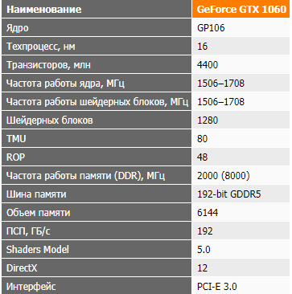
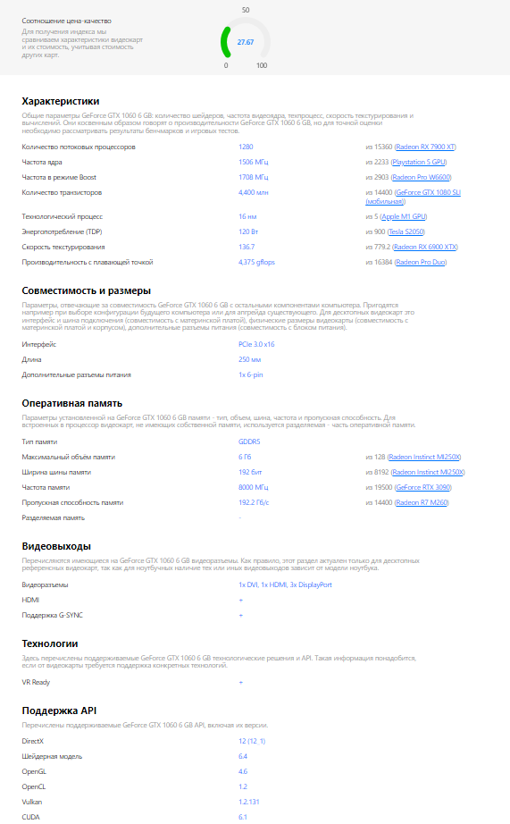

Описание товара:
Видеокарты серии GeForce GTX 1060 остаются наиболее популярными решениями от NVIDIA, обеспечивая достаточно высокую производительность в Full HD.
Основной интерес у отечественного покупателя вызывают бюджетные модели этой серии, без трехэтажных кулеров и подсветки. В данном обзоре мы рассмотрим доступную версию GeForce
GTX 1060 от компании ASUS. Посмотрим, на что способна видеокарта ASUS Dual GeForce GTX 1060 в номинале и в разгоне, сравним ее производительность с Radeon RX 580.
Характеристика:

Подробное описоние товара:
